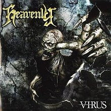

Descripción:
Estudiante de ingeniería, graduado de bachiller general. El motivo de la elección de la carrera es la atracción por las computadoras y el mundo informático en general, a su vez por la versatilidad en el ámbito labral y la gran demanda de personas con conocimientos informáticos.
Gustos:
- Los deportes de alto rendimiento, especificamente el football y parecidos.
- La mayoría de generos de videojuegos en especial los de acción, aventura y con temáticas origniles y una buena historia.
- Cosas del mundo "geek" como cosas sobre tecnología (videojuegos, celulares, computadoras, software, hardware, etc).
- En cuanto a términos de música, prácticamente todos los géneros musciales, exceptuando unos cuantos que por opinión propia carecen de personalidad, originalidad y una letra más rebuscada que trasmita algo al oyente.

Datos Generales:
- Nombre completo:
- Edwin Vladimir Martínez Alvarado
- Carrera:
- Ingeniería informática
- Carne:
- 00140818
- Año de estudio:
- Segundo año, comienzo: 2018
- Correo
- 00140818@uca.edu.sv
- GITHUB:
- https://github.com/3dw1n25